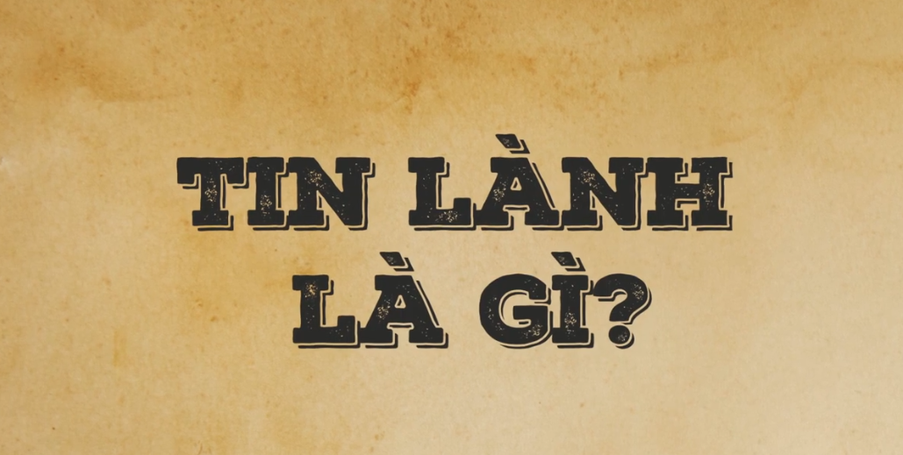

.png)
Trong tháng 8 năm 2026 chúng tôi sẽ tổ chức một đêm truyền giảng.

Bấm vào hình này để mở link ^
Phúc âm thật là tin tốt lành của Đức Chúa Trời để cứu tội nhân. Con người bởi bản chất tội lỗi và đã bị ngăn cách khỏi Đức Chúa Trời đã không có hy vọng để cứu vãn tình trạng đó. Nhưng Đức Chúa Trời đã ban cho phương tiện để cứu con người qua sự chết, sự chôn và sự sống lại của Đấng Cứu Chuộc, Chúa Giê-su Christ.
Từ "phúc âm" theo nghĩa đen có nghĩa là "tin tức tốt lành". Tuy nhiên, để thực sự hiểu tin tức này tốt lành như thế nào, đầu tiên chúng ta phải hiểu biết những tin xấu. Do sự sa ngã của con người trong Vườn Địa Đàng (Sáng thế ký 3:6), mỗi một phần của con người - tâm trí, ý chí, tình cảm và thể xác đều đã bị hư hoại bởi tội lỗi. Bởi vì bản chất tội lỗi của con người, con người không và không thể tìm kiếm được Đức Chúa Trời. Con người không có lòng khao khát đến với Chúa, và trong thực tế, tâm trí của con người chống nghịch lại với Đức Chúa Trời (Rô-ma 8:7). Đức Chúa Trời đã tuyên bố rằng số phận của con người tội lỗi là đi vào trong hỏa ngục đời đời, bị ngăn cách với Đức Chúa Trời. Chính trong địa ngục mà con người phải chịu đoán phạt bởi tội chống nghịch lại Đức Chúa Trời thánh khiết và công chính. Đây thực sự sẽ là tin xấu nếu không có giải pháp cứu vãn.
Nhưng trong phúc âm, Đức Chúa Trời, với lòng thương xót, đã ban cho giải pháp cứu vãn đó, để thay thế cho chúng ta - Chúa Jêsus Christ - là Đấng đã đến chịu thay hình phạt cho tội lỗi của chúng ta bởi sự hy sinh của Ngài trên thập tự giá. Đây là cốt lõi của Tin Lành mà Phao-lô rao giảng cho tín hữu thành Cô-rinh-tô. Trong 1 Cô-rinh-tô 15:2-4, ông giải thích ba yếu tố của phúc âm - sự chết, sự chôn và sự sống lại của Đấng Christ cho chúng ta. Con người củ của chúng ta đã cùng chết với Đấng Christ trên thập tự giá và được chôn với Ngài. Sau đó, chúng ta đã được sống lại với Ngài để có một cuộc sống mới (Rô-ma 6:4-8). Phao-lô nói với chúng ta hãy "giữ vững" Tin Lành thật này, là điều duy nhất để được cứu. Tin cậy vào bất kỳ phúc âm nào khác là tin vào vô vọng. Trong Rô-ma 1:16-17, Phao-lô cũng tuyên bố rằng phúc âm thật là "quyền phép của Đức Chúa Trời để cứu mọi kẻ tin", ý của ông rằng sự cứu rỗi là không đạt được bởi những nỗ lực của con người, nhưng bởi ân sủng của Đức Chúa Trời qua món quà của đức tin (Ê-phê-sô 2:8-9).
Bởi vì Tin Lành, nhờ quyền năng của Ðức Chúa Trời cho những ai tin vào Đấng Christ (Rô-ma 10:9) không chỉ được cứu khỏi hỏa ngục. Chúng ta, trên thực tế, được ban cho một bản chất hoàn toàn mới (2 Cô-rinh-tô 5:17; Rô-ma 6:4; Ê-phê-sô 4:24) với một tấm lòng đã được biến đổi, với một khao khát mới, ý chí, và thái độ được thể hiện trong những việc làm lành. Đây là bông trái mà Đức Thánh Linh sản sinh trong chúng ta bởi quyền năng của Ngài. Những việc làm không bao giờ là phương tiện cứu rỗi, nhưng chúng là bằng chứng của nó (Ê-phê-sô 2:10; Tít 2:7; 1 Giăng 2:6). Những người được cứu bởi quyền năng của Đức Chúa Trời sẽ luôn luôn cho thấy chứng cớ của sự cứu rỗi bởi một cuộc đời được biến đổi.
Trong tháng 8 năm 2026 chúng tôi sẽ tổ chức một đêm truyền giảng.
Trưởng Ban Hiệp Nguyện:Mục Sư Nguyễn Hữu Ninh